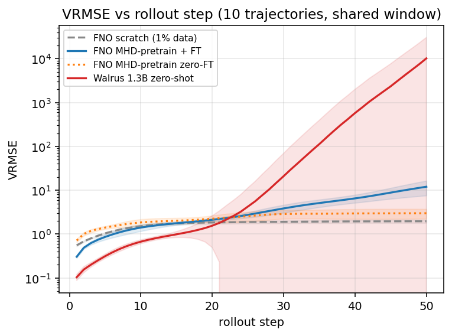
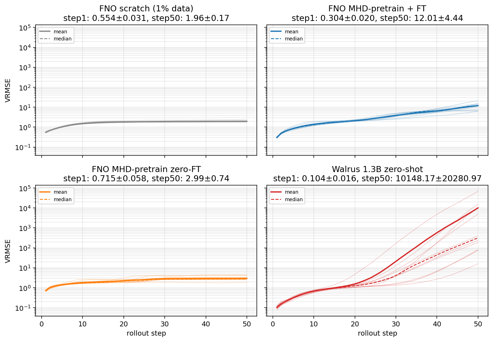
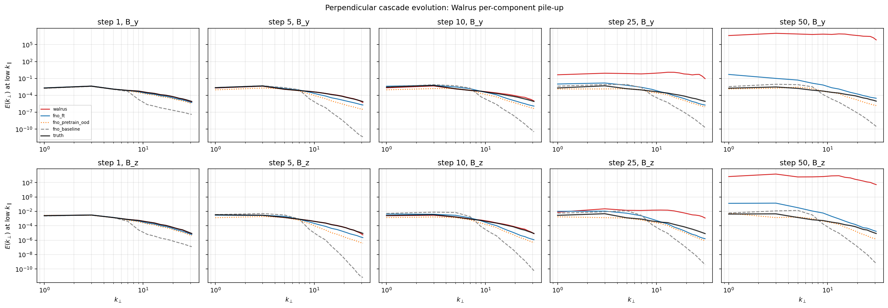
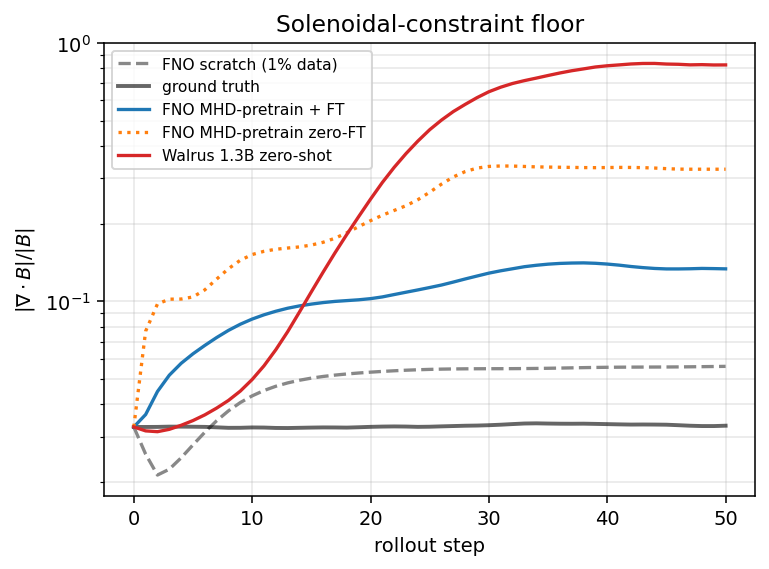

Polymathic AI's Walrus is a 1.3-billion-parameter neural network trained across nineteen physics scenarios — fluids, MHD, acoustics, astrophysical turbulence, all at once. Their headline number on magnetohydrodynamic turbulence is a single VRMSE = 1.23 averaged over rollout steps 21–60. That number is published. What it does not tell you is which physics the model preserves and which it breaks. I ran the diagnostic suite from my last paper on Walrus zero-shot. The story is sharper than the headline.
The setup
Walrus is a foundation model for physics: pretrain on a diverse corpus, fine-tune (or zero-shot) on whatever specific problem you actually care about. The hope is that the same model can predict everything from acoustic scattering to supernova explosions to plasma turbulence, and that the diversity of pretraining produces something that generalizes.
Their MHD test set is the same one I used for my earlier MHD study: 3D compressible isothermal magnetohydrodynamics on a 643 periodic grid, with an imposed background magnetic field along x̂ — what plasma physicists call a guide field. Sub-Alfvénic conditions (MA = 0.7) so that field is dynamically important. The same ten test trajectories, the same physics, the same evaluation infrastructure. The only thing that changes is the model.
One scope correction up front: Walrus's published 1.23 number is for the model after an additional 500K-sample fine-tune on MHD specifically, per Section 5.2 of their paper. That fine-tuned checkpoint isn't released. What's released is the base pretrained checkpoint — trained on everything, specialized to nothing. So this is a study of zero-shot Walrus.
The paper itself does plot the zero-shot rollout curve in Figure 15 of their appendix — labelled Walrus-PT — and the MHD (3D) panel of that figure shows it climbing from VRMSE ~1 at step 1 to roughly 106 by step 100. Their own Table 7 lists MHD as one of only three of nineteen datasets with "high long-term errors" (median VRMSE ≥ 1) even with their patch-jitter stability mechanism enabled. So the catastrophic blowup is not in dispute. The paper's own data shows it. What the published metric doesn't tell you is what physics is breaking, and that's what the diagnostic suite is for.
One-step prediction is excellent. Long-horizon rollout is not.
For each test trajectory, you give the model three frames of MHD turbulence and ask it to predict the next one. Then you feed that prediction back as the new "current" state and ask for the frame after, and so on, fifty times. This is autoregressive rollout: the standard test of whether a learned model is actually a usable surrogate for the underlying physics, not just a one-step interpolator.
At step 1, Walrus is the best model I've evaluated on this task. Median VRMSE 0.10, beating every FNO variant from the previous paper (which range from 0.30 to 0.72). The 1.3B-parameter foundation model has clearly learned the one-step physics of magnetized turbulence.

By step 50, every Walrus trajectory has diverged. The median rollout error reaches the hundreds; the worst trajectory exceeds 104. Compare to the simple from-scratch baseline (a 70× smaller specialized model trained on 1% of the same data) which plateaus near 2 throughout. The foundation model with all its scale and diversity diverges by four orders of magnitude past the point where the small specialized model is stable.
This is structural. It's not driven by one bad trajectory pulling the average. All ten diverge.

What's actually breaking: the perpendicular magnetic plane
Decomposing the failure by physical channel reveals something specific. The magnetic field has three components: a parallel one along the imposed guide field axis (Bx), and two perpendicular ones (By, Bz). In MA=0.7 turbulence with an imposed B0 ∥ x̂, the parallel component is mostly constant; the perpendicular ones carry the turbulent fluctuations. Statistically, By and Bz are interchangeable — the perpendicular plane is isotropic in expectation.
Walrus's failure breaks that symmetry, per trajectory. Each rollout selects exactly one of By or Bz to amplify catastrophically, while leaving the other one bounded. The parallel guide field Bx stays near unity throughout. Density and all three velocity components stay near truth-like values throughout. The instability is structurally localized to the perpendicular B-fluctuations.
Some trajectories pick By; others pick Bz. The choice is determined by the specific three-frame input the model is conditioned on, not by random noise: I ran five independent inferences on the same trajectory's input frames, each perturbed by a different 10−6 Gaussian noise pattern, and all five selected the same basin. Tiny perturbations don't flip it. But the same physical trajectory file, conditioned on a different three-frame slice (frames 14–16 instead of frames 0–2), can land in the opposite basin. The basin selection depends on the gross structure of the input, not on the underlying physical realization or on infinitesimal noise.
Mechanistically this is the signature of an unstable manifold in the model's autoregressive map with two equivalent perpendicular sub-directions. Whichever direction is more aligned with the input state's small initial asymmetry wins. Then exponential amplification within that basin dominates the rollout.
It's not a numerical artifact
One natural objection: maybe this is just FP32 round-off compounding under autoregressive feedback. Single precision has roughly seven decimal digits; over fifty steps with millions of operations per step, roundoff could conceivably bootstrap into something that looks like instability without reflecting any real property of the trained model.
I tested this. I re-ran the same inference in FP64 (double precision) on an A100 80GB — one trajectory, both evaluation windows. FP64 reduces the per-step floating-point error by roughly nine orders of magnitude. If the divergence were numerical, FP64 would suppress it by a comparable amount. It does not. At step 50, the unstable B-component variance is the same order of magnitude in FP64 and FP32 (~107–108 in both). The instability is structural in the trained model's autoregressive dynamics. Higher-precision arithmetic does nothing to suppress it because the arithmetic is fine; the model is producing those values deterministically.
Where in wavenumber space the energy goes
Looking at the perpendicular cascade E(k⊥) over rollout reveals where in scale space the divergence concentrates. At step 1 the predicted spectrum tracks ground truth: low wavenumbers dominate, with energy roughly 150× greater at low k⊥ than at the grid scale. By step 50, that ratio collapses to about 3. The spectrum has flattened, with energy preferentially piling up at the highest representable wavenumbers.

The growth factors from step 1 to step 50: low-k grows by ~3×109, high-k by ~1.5×1011. High-k modes grow about fifty times faster than low-k modes. This is the spectral signature of aliasing accumulation at the patch grid scale — a mode of failure that comes from the way ViT-style architectures tokenize their input into spatial patches. Walrus's authors knew about this and designed an explicit countermeasure (they call it patch jittering: random spatial translations applied during tokenization, theoretically averaging out the aliased frequencies). Patch jittering helps but does not fully suppress the accumulation when the model is rolled out autoregressively for fifty steps in a row.
This is informative because it points to a specific architectural intervention. A divergence-free spectral projection at the autoregressive output — mathematically guaranteed by construction to enforce ∇·B = 0 on each predicted frame — would damp exactly the constraint-violating high-k modes that compound into the basin blow-up. The intervention is symmetric in By and Bz by construction, so the per-trajectory basin asymmetry doesn't matter to it. Whether this would actually work is open; it's a clean testable hypothesis.
Maxwell's equation, violated
Speaking of ∇·B = 0: that's not a soft constraint. It's a structural requirement of any magnetic field, derived from the absence of magnetic monopoles. Numerical MHD codes go to substantial trouble (constrained-transport schemes, vector-potential parametrizations, divergence-cleaning) to enforce it. Neural surrogates trained with one-step pixel losses do not enforce it at all. Whatever the training loss happens to penalize is what they preserve; everything else drifts.
The ground-truth dataset has ∇·B approximately 3% of the local field magnitude (the residual numerical floor of the underlying solver). Walrus's predictions at step 50 reach 82% of the local field magnitude. Combined with the field-amplification mode (the local |B| itself has grown to roughly 690 in median, 22,000 in mean), the absolute ∇·B violation is somewhere between 15,000× and 500,000× the truth value. The model is producing fields that are physically meaningless at the level of Maxwell's equations.

This co-localizes with the perpendicular B-component blow-up: when one of By or Bz explodes, you get massive numerical magnetic monopole content as a byproduct. The same architectural intervention — project predictions onto the divergence-free subspace each step — would address both pathologies simultaneously.
Why this matters
The published Table 1 number of 1.23 is for the fine-tuned model. The Figure 15 zero-shot curve shows the catastrophic blowup — that part is consistent with what I find. What's missing from both is the mechanistic structure. A user reading the headline number would conclude "fine-tuned Walrus does fine on MHD." A user reading Figure 15 would conclude "zero-shot Walrus blows up." Neither would learn that one-step physics is captured beautifully, that all ten test trajectories blow up specifically in one or the other perpendicular B-component, that the instability survives a 109-fold improvement in arithmetic precision, or that ∇·B reaches catastrophic levels at long horizon. The diagnostic suite is what makes the failure mode actionable rather than just observed.
For deployment in real plasma applications — tokamak transport, fusion control, astrophysical surveys, anything that needs autoregressive rollouts of more than twenty timesteps — this is the part that matters. A model with an excellent step-1 number and catastrophic step-50 behavior cannot be trusted with a multi-step prediction. A model with a known specific architectural failure in a specific physical channel can at least be defended against (clip output, project onto the constraint manifold, retrain with the right loss). The diagnostic profile is the actionable artifact, not the headline number.
The natural follow-up experiment is whether the published Section 5.2 fine-tuning protocol (an additional 500K MHD samples, $200–$400 of compute, two days on four H100s) resolves the basin instability or whether it survives. That experiment cleanly distinguishes "per-task fine-tuning is sufficient for plasma deployment" from "architectural intervention is needed." It's the kind of question that would be answered most efficiently by Polymathic themselves, or by a collaborator with access to their compute. It's the kind of question I'd want to answer next.
Code and data at github.com/sdelaurentiis123/well-work/p2-walrus. Total compute: under $10 on rented GPUs (RTX 4090 + A100 80GB) for the full diagnostic campaign including the FP64 sanity check.